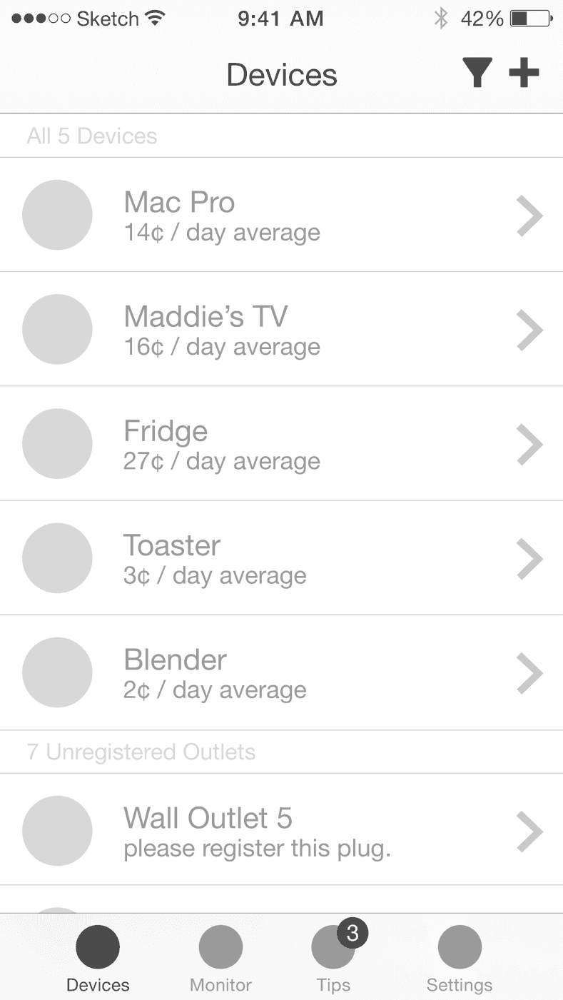
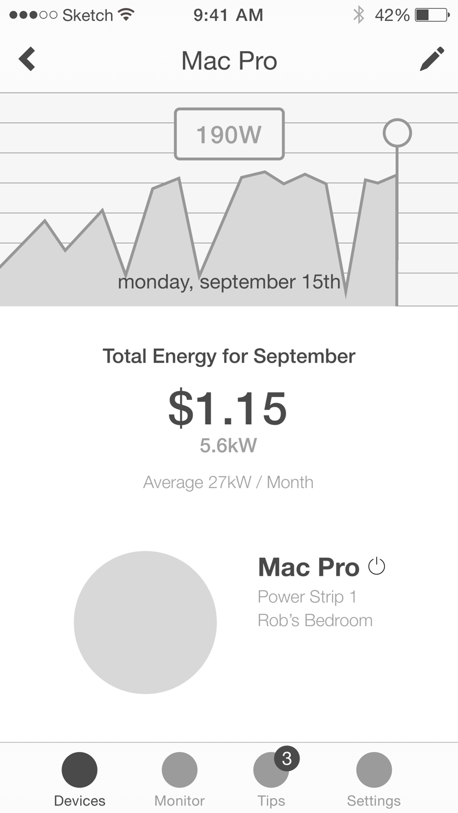

Energy Hog is an electricity consumption monitor and advisor for personal spaces. Used for lowering your electricity bill and becoming as energy efficient as you can be.
The objective of this project was to create an app concept that implemented data visualizations. Everything beyond that was up to me. While charging my phone I wanted to visualize the wattage of all the devices I used in a day. I also wanted to see how my usage performed in the long run, like a month, or a year.
How is my monthly spending compared to a national average? Are there helpful tips to reduce the footprint of my fridge? I wanted to create a solution that helped me find which devices and appliances were hogging up all of my electricity. I wanted to track them and optimize their economical footprint.
Even though this was considered to be outside the scope of a student project I did it anyways. I didn’t see the point in conceptualizing the project if it wasn’t realistically possible. With a bit of googling I figured that wattage could be recorded if devices were paired with smart outlets and power strips.
Through WiFi, it could connect to your smartphone or possibly other devices. The technology was there but in 2014 the functionality of smart outlets was limited to just turning them on and off. This was basically undiscovered territory and that’s what excited me most.
After drafting a core feature list and user flows I lightly draft wireframes. I only wireframe enough detail to describe the basic layout of images and information. However, I also use this time to test the design for extreme values like long names and strange measurements.
At this point I intentionally keep visuals like typography and iconography minimal. After all, wireframes should be flexible for big swooping changes. It’s best to make the large decisions here because it gets more time-consuming to change your mind later.
After graduating, I revisited the project to use what I’ve learned to make improvements. Between helpful feedback or just adding small details there’s a lot of visual and layout changes over itterations. The original 2014 version is in the design deck download. The version you’re looking at now is actually the fourth version from 2016.
Features were reworked or scrapped altogether. I remember my professor urging me to make a home builder much like The Sims to make the app seem more “innovative” and “fantastical”. But forcing the user to literally draw a map of their house was obtuse and unnecessary in comparison to a list view.